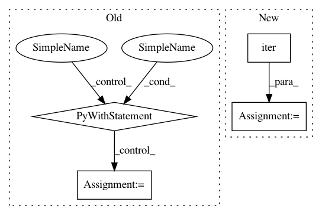

7ed8c6bbcfb2dc0da9b1011ba21d12791239de79,deepvariant/postprocess_variants.py,,main,#Any#,932
Before Change
header = dv_vcf_constants.deepvariant_header(
contigs=contigs, sample_names=[sample_name])
use_csi = _decide_to_use_csi(contigs)
with tempfile.NamedTemporaryFile() as temp:
start_time = time.time()
postprocess_variants_lib.process_single_sites_tfrecords(
contigs, paths, temp.name)
logging.info("CVO sorting took %s minutes",
(time.time() - start_time) / 60)
logging.info("Transforming call_variants_output to variants.")
start_time = time.time()
independent_variants = _transform_call_variants_output_to_variants(
input_sorted_tfrecord_path=temp.name,
qual_filter=FLAGS.qual_filter,
multi_allelic_qual_filter=FLAGS.multi_allelic_qual_filter,
sample_name=sample_name,
group_variants=FLAGS.group_variants)
variant_generator = haplotypes.maybe_resolve_conflicting_variants(
independent_variants)
start_time = time.time()
if not FLAGS.nonvariant_site_tfrecord_path:
logging.info("Writing variants to VCF.")
write_variants_to_vcf(
variant_iterable=variant_generator,
output_vcf_path=FLAGS.outfile,
header=header)
if FLAGS.outfile.endswith(".gz"):
build_index(FLAGS.outfile, use_csi)
logging.info("VCF creation took %s minutes",
(time.time() - start_time) / 60)
else:
logging.info("Merging and writing variants to VCF and gVCF.")
lessthanfn = _get_contig_based_lessthan(contigs)
with vcf.VcfWriter(
FLAGS.outfile, header=header, round_qualities=True) as vcf_writer, \
vcf.VcfWriter(
FLAGS.gvcf_outfile, header=header, round_qualities=True) \
as gvcf_writer:
nonvariant_generator = tfrecord.read_shard_sorted_tfrecords(
FLAGS.nonvariant_site_tfrecord_path,
key=_get_contig_based_variant_sort_keyfn(contigs),
proto=variants_pb2.Variant)
merge_and_write_variants_and_nonvariants(
variant_generator, nonvariant_generator, lessthanfn, fasta_reader,
vcf_writer, gvcf_writer)
if FLAGS.outfile.endswith(".gz"):
build_index(FLAGS.outfile, use_csi)
if FLAGS.gvcf_outfile.endswith(".gz"):
build_index(FLAGS.gvcf_outfile, use_csi)
logging.info("Finished writing VCF and gVCF in %s minutes.",
(time.time() - start_time) / 60)
if FLAGS.vcf_stats_report:
outfile_base = _get_base_path(FLAGS.outfile)
with vcf.VcfReader(FLAGS.outfile) as reader:
vcf_stats.create_vcf_report(
variants=reader.iterate(),
output_basename=outfile_base,
sample_name=sample_name,
vcf_reader=reader)
if __name__ == "__main__":
flags.mark_flags_as_required(["infile", "outfile", "ref"])
tf.app.run()
After Change
if record is None:
logging.info("call_variants_output is empty. Writing out empty VCF.")
sample_name = dv_constants.DEFAULT_SAMPLE_NAME
variant_generator = iter([])
else:
sample_name = _extract_single_sample_name(record)
temp = tempfile.NamedTemporaryFile()
start_time = time.time()
In pattern: SUPERPATTERN
Frequency: 3
Non-data size: 4
Instances
Project Name: google/deepvariant
Commit Name: 7ed8c6bbcfb2dc0da9b1011ba21d12791239de79
Time: 2019-10-21
Author: gunjanbaid@google.com
File Name: deepvariant/postprocess_variants.py
Class Name:
Method Name: main
Project Name: OpenNMT/OpenNMT-tf
Commit Name: 380b177c6339818c59d34db974a9690f1672f06b
Time: 2019-02-20
Author: guillaumekln@users.noreply.github.com
File Name: opennmt/tests/inputter_test.py
Class Name: InputterTest
Method Name: _makeDataset
Project Name: OpenNMT/OpenNMT-tf
Commit Name: 71753922bd63dfa73e3b10c572f73e268b406ae6
Time: 2019-07-05
Author: guillaume.klein@systrangroup.com
File Name: opennmt/tests/model_test.py
Class Name: ModelTest
Method Name: testSequenceToSequenceWithReplaceUnknownTarget